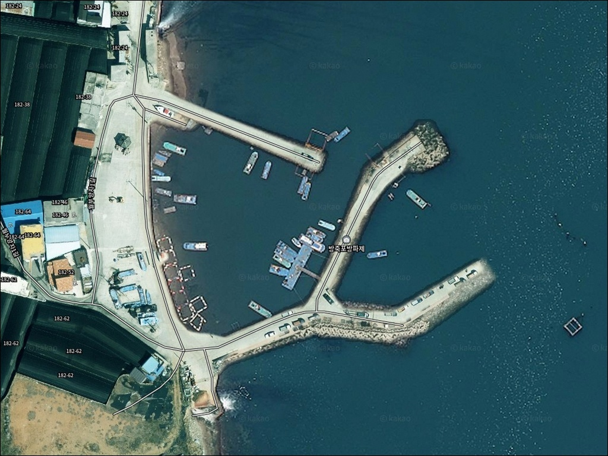
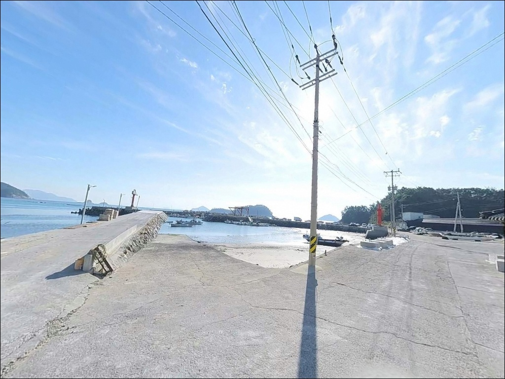
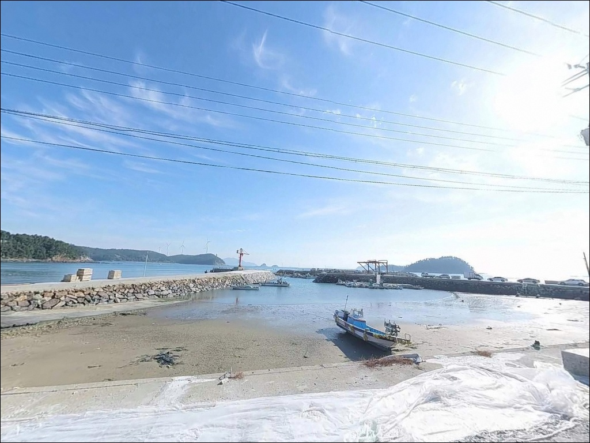
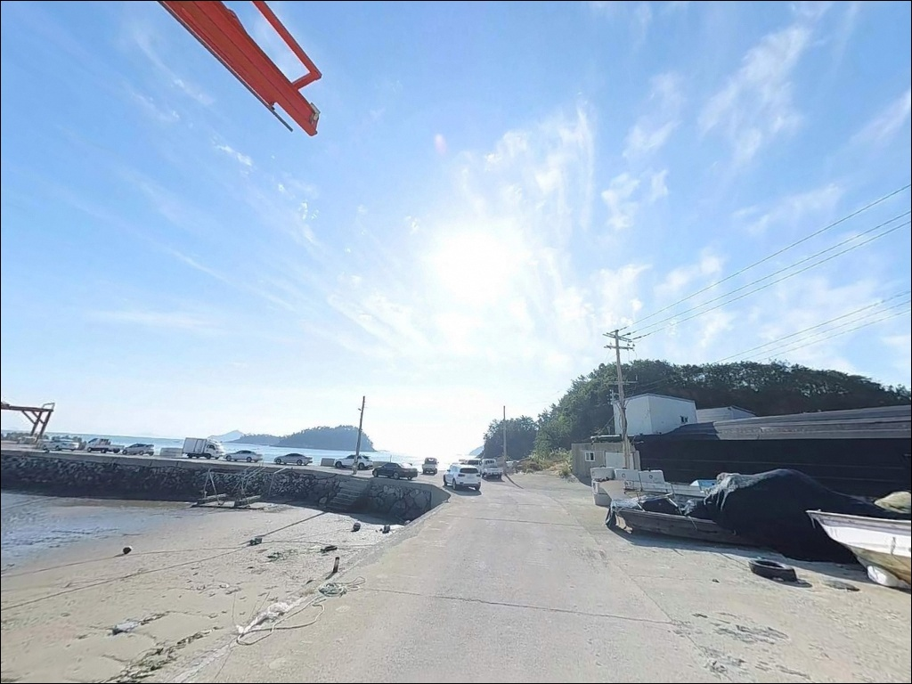
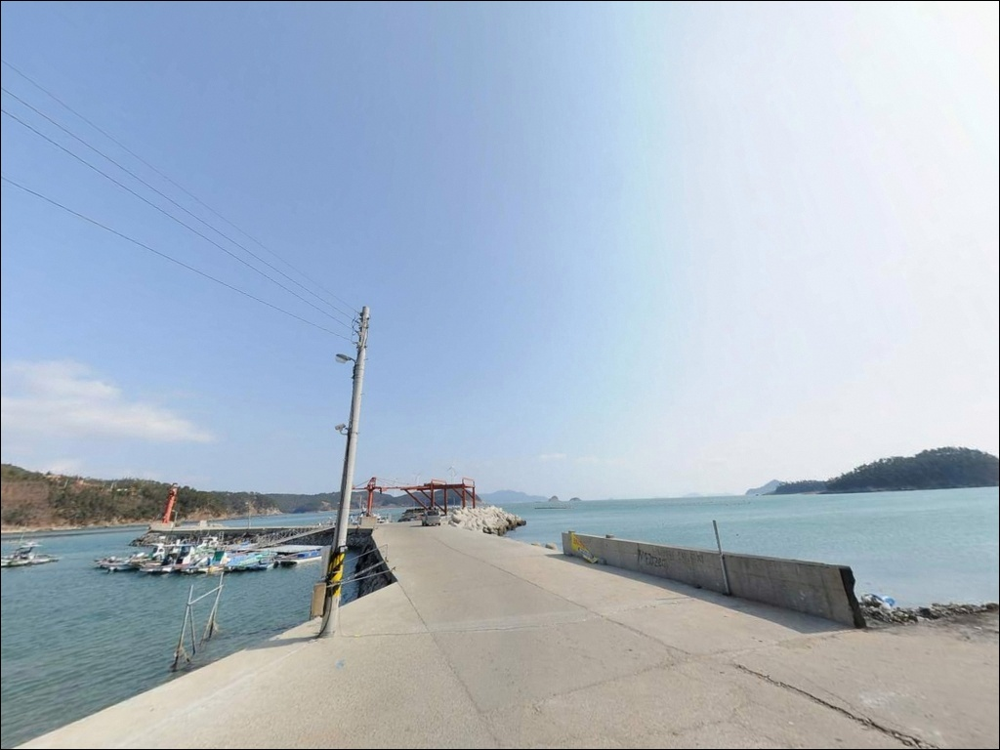
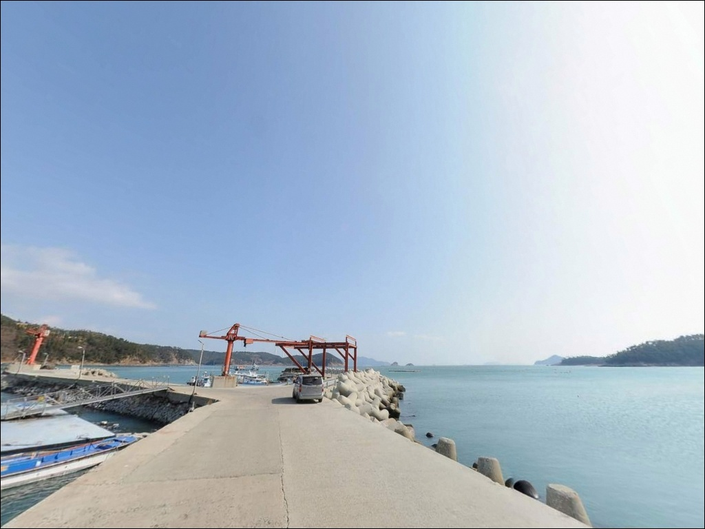
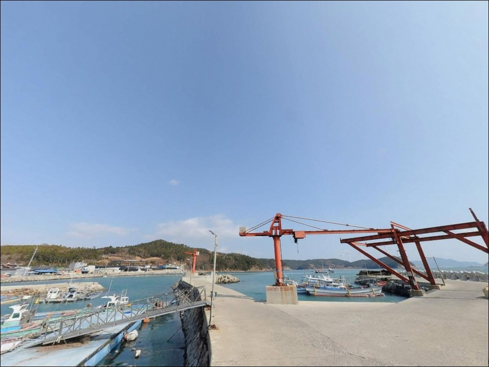
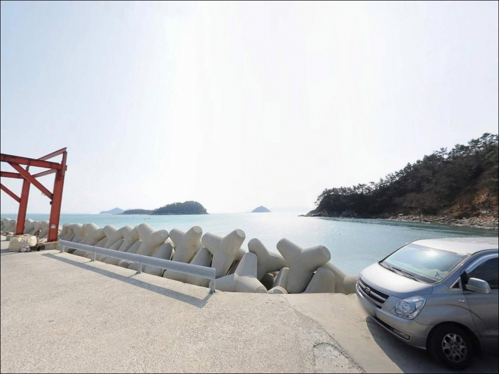
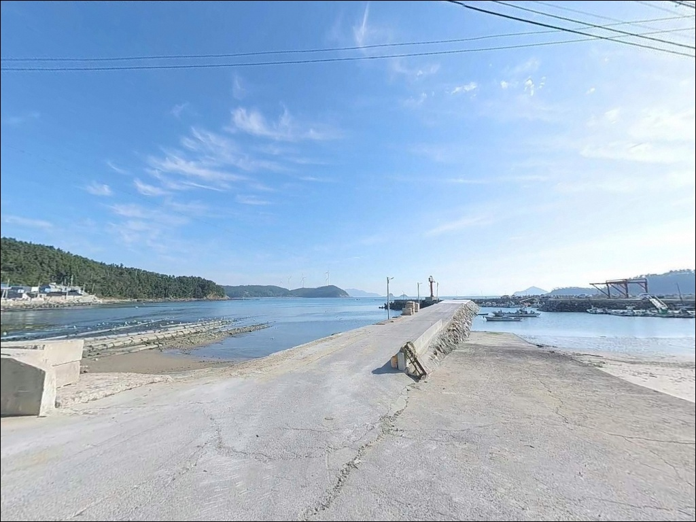

방죽포방파제, 신지도 전남 완도군 시즌별 어종 공략하기 좋은 바다 차박 낚시 장소


포인트 안내
방죽포방파제
전남 완도군 신지면 월양리 1156-16
방파제 끝단과 외항 측면 중
어느 자리에서 캐스팅하느냐에 따라
이 포인트의 조과는 분명하게 갈립니다.
같은 날, 같은 채비를 써도
조류가 꺾이는 끝단을 선점하지 못하면
하루 내내 입질을 기다리다 마치는 경우가
생기는 구조입니다.
완도 신지면 월양리 해안에 자리한
방죽포방파제는 남해 외해 방향으로
직접 열려 있는 외항 개방형 구조입니다.
방파제 전면 수역에는 소도서가 산재해 있어
섬 사이를 통과한 조류가 포인트 앞까지
그대로 흘러드는 지형입니다.
이 글은 방죽포방파제의
진입 동선, 차박 여건,
지형 기반 낚시 여건과 방식별 공략 조건에 집중합니다.
조황 단정이나 특정 어종 보장은
이 글의 범위에 포함되지 않습니다.

1. 포인트 위치 및 진입 동선 분석
신지면 월양리는 신지대교와 장보고대교를 통해
완도읍에서 차량으로 진입할 수 있습니다.
방죽포방파제까지는 해안도로와
마을 내부 도로를 거쳐 이어지며,
방파제 입구까지 포장도로가 연결되어 있어
기본적인 접근성은 양호한 편입니다.
다만 마을 내부 진입로는
편도 1차로 수준의 좁은 도로 구간을 포함합니다.
대형 캠핑카나 트레일러를 장착한 차량은
회차 공간이 충분하지 않으므로
출발 전 위성지도로 진입 경로를
미리 파악해 두는 것이 필수입니다.
주차는 방파제 진입로 인근 공터와
선착장 주변 빈 공간을 활용합니다.
소형·중형 차량 기준으로 2~4대 정도 수용이
가능한 수준이며,
어선 작업 동선을 막지 않는 위치가 우선입니다.
만조 시에는 주차 위치에 따라
파도 영향을 받을 수 있으므로
조석 상태를 함께 확인해야 합니다.

2. 차박 환경 평가 및 야간 체류 여건
방죽포방파제 인근은 민가 밀집도가 낮은
소규모 어촌 마을 구조입니다.
야간에는 차량 통행이 거의 없고
주변이 조용해
프라이버시 확보 측면은 양호한 편입니다.
다만 방파제 자체 조명은 제한적이거나
없는 경우가 많으므로
개인 헤드랜턴과 랜턴은 필수입니다.
이 방파제는 동향으로 개방된 구조입니다.
동풍 계열 바람이 불거나 파고가 높아지면
방파제 외항 측이 직접 영향을 받습니다.
동풍 계열 기상 확인이 방문 전 필수 판단 항목이며,
기상청 해상 예보를 당일 아침 다시 한번
확인하는 것이 기본입니다.
차박은 방파제 입구 공터를 활용하는
단기 대기형으로 가능한 수준입니다.
주차 공간이 크지 않아
여러 대가 동시에 차박하기에는
공간 확보 여부를 먼저 확인해야 합니다.


3. 주변 편의시설 및 인프라 현황
방죽포방파제에서 북쪽으로 약 1.5km 거리에
세븐일레븐 신지 매장이 위치합니다.
간단한 식음료와 낚시 소품은
이 편의점을 기점으로 준비할 수 있습니다.
다만 전체적인 생활 인프라는
완전 자급 체제로 진입하는 것이
현실적인 준비 방식입니다.
신지면 소재지 방면으로 약 7km 이동하면
GS25 편의점과 약국이 있습니다.
식수, 얼음, 여분 채비, 연료 등
소모성 소품은 모두 출발 전 준비하는 편이
현장에서의 불편을 줄이는 방법입니다.
응급 상황 시 완도읍권까지
이동 거리가 있으므로
비상약품과 연료 여유분은
기본으로 갖춰야 합니다.

4. 방문 전 준비사항 및 체크 포인트
방죽포방파제 방문 전 가장 먼저 확인할 것은
물때입니다.
소도서가 산재한 해역 특성상
조류 흐름이 일정하게 유지되며,
사리 전후에는 조류가 세져
채비 컨트롤이 어려워지는 구간이 생깁니다.
바다타임에서 월양리 기준 물때를 확인하고
물돌이 전후 타이밍을 기준으로
입장 시각을 조율하는 편이 좋습니다.
방파제 외항 측 테트라포트 구간은
야간에 미끄러짐 사고 위험이 높습니다.
전용 낚시화나 스파이크 밑창을 갖추고,
구명조끼는 반드시 착용해야 합니다.
암반과 모래가 혼재된 바닥 지형으로
채비 손실이 잦은 편이므로
여분 채비는 넉넉하게 준비하는 편이 좋습니다.
어선이 이용하는 선착장 기능을 겸하는 구조이므로
어선 이동 동선과 어구에 접촉하지 않도록
자리를 잡는 것이 기본 매너입니다.
완도군은 낚시 구역 쓰레기 단속을
시행하는 지자체이므로
발생한 쓰레기는 전량 회수해야 합니다.

5. 외항으로 바로 열린 방파제에서
자리 선택이 달라지는 조건
방죽포방파제의 핵심은
방파제 끝단에서 형성되는 조류 변화입니다.
직선형으로 뻗은 방파제 끝단은
조류가 꺾이는 지점으로
물돌이 타임에 유속 변화가
가장 뚜렷하게 나타나는 자리입니다.
이 구간에서 채비가 자연스럽게 흐르는
타이밍을 노리는 것이
이 포인트 공략의 기본 전제입니다.
외항 측면은 테트라포트가 배치된 구간으로
캐스팅 거리를 충분히 확보할 수 있습니다.
방파제 끝단 기준 정면 수심은
약 7~10m권을 유지하며,
외항으로 멀리 투척할수록
암반과 모래가 섞인 혼합 지형이 나타납니다.
이 바닥 구조는 루어와 에깅 채비가
힘을 발휘하는 조건을 갖추고 있습니다.
방파제 내항 쪽은 석축 형태로
발판이 안정적인 편입니다.
조석 간만에 따라 수심 변동이 크고
조류 흐름이 외항에 비해 약한 편이라,
찌낚시 위주로 운용하는 자리입니다.
출조 전 신지도 방파제 조황 검색으로
최신 상황을 확인해 두는 편이 좋습니다.


6. 포인트에 적합한 낚시 스타일 제안
이 포인트에서 가장 폭넓게 활용되는 방식은
원투낚시입니다.
외항 및 끝단에서 50~70m 장타 위주로 운용하면
바닥층 어종 공략에 유리한 조건이 갖춰집니다.
들물 시 채비가 안정적으로 흐르는 편이며,
조류가 살아나는 물때를 맞추는 것이
이 방식 운용의 핵심입니다.
루어낚시도 이 포인트 구조에 잘 맞는 선택입니다.
방파제 끝단과 테트라포트 경계부를
소프트베이트나 미노우 계열 루어로 탐색하면
이 해역에서 기대해 볼 수 있는 농어·볼락 계열을
노릴 수 있는 구조입니다.
야간에는 볼락 라이트게임 방식으로
테트라포트 주변 암초 경계선을 천천히 공략하는
방식이 유효합니다.
에깅도 시도해볼 만한 스타일입니다.
완도 해역은 갑오징어와 볼락이 공존하는 해역으로,
방파제 외측 야간 에깅에서
시즌별 반응을 기대해볼 수 있습니다.
방파제 끝단과 갯바위 연결 구간이
핵심 캐스팅 라인이며,
봄과 가을 시즌에 집중적으로 시도하는 편이
효율적입니다.

7. 대안 포인트 및 플랜 B 동선
방죽포방파제 상황이 여의치 않을 때
가장 먼저 고려할 대안은
동고항 방파제입니다.
신지도 내에서 접근성이 우수하고
방파제 구조가 안정적이며,
도보로 이동할 수 있는 갯바위 포인트까지
확장 공략이 가능합니다.
세포항 방파제도 같은 해역 내
대표 포인트 중 하나입니다.
수심과 조류가 안정적인 편으로
원투낚시와 찌낚시 모두 운용이 가능합니다.
방죽포방파제를 처음 찾는다면
세포항 방파제를 기점으로 잡고
방죽포를 병행 탐색하는 동선이
이 권역에서 효율적인 이동 경로입니다.
차박 대안으로는
신지 명사십리 해수욕장 인근 주차 구역을
고려할 수 있습니다.
방죽포방파제에서 약 10km 거리이며,
대규모 주차 공간과 화장실 인프라가
갖춰진 구역입니다.

자리 판단과 물때를 갖추면
방죽포방파제가 달리 보입니다
원투낚시와 루어, 에깅을 함께 즐기는 낚시인에게
방죽포방파제의 지형 조건은
충분히 매력적인 구조입니다.
외항 직결 수심과 조류 흐름이
방식을 가리지 않는 복합 공략을
가능하게 하고,
소도서 산재 해역 특성상
탐색의 여지가 남아 있는 포인트이기도 합니다.
다만 동향 개방 구조로 인해
동풍 계열 기상 변화에 취약하고,
진입로 폭이 좁아
대형 차량 운용에는 사전 확인이 필요합니다.
물때 확인, 기상 점검, 진입로 파악,
이 세 가지를 갖추고 간다면
신지도 동남부 조용한 포인트를
제대로 활용하는 출조가 됩니다.
낚시를 마치고 방파제 입구 공터에
차를 세워 하룻밤 머무는 차박 여행자라면,
편의시설 준비와 기상 확인을 미리 마쳐두면
소음 없는 어촌 밤을 낚시와 함께
보내기에 나쁘지 않은 포인트입니다.